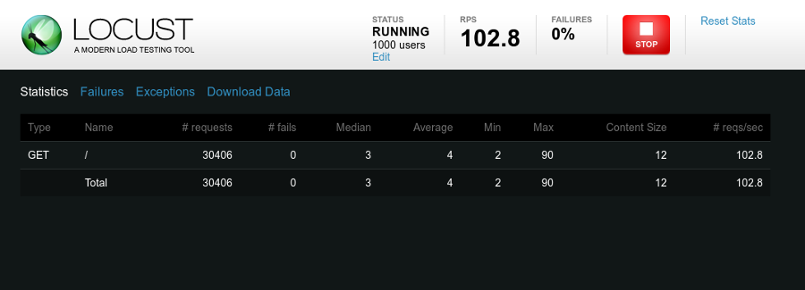

Remote Pad
Imagine poder controlar um jogo em seu computador usando seu smartphone como gamepad?

Arquitetura

Agenda
Tópicos:
- html5 - events, hardware access
- nodejs - event driven, assynchronous I/O
- robotjs - envios de tecla através de software
- vuejs - unobtrusive reactivity system
- mqtt - real time communication

Device Orientation Events
Eventos no DOM para obter informações sobre a orientação e movimentação física do dispositivo móvel.
- Giroscópio
- Acelerômetro
- Compasso
Device Orientation Events

Eventos:
deviceorientationdevicemotion✓compassneedscalibration
Outras APIs
- Ambient Light API
- Geolocation API
- Battery Status API
- getUserMedia API
- Vibration API
- Web Notification API
- Web Speech API

NodeJS
NodeJS usa um modelo orientado a eventos, com E/S não bloqueante que o torna leve e eficiente.
Como o Javascript é restrito ao browser foi necessário criar outros módulos como:
- Buffer
- Child Process
- File System
- OS
- Stream, etc.
NodeJS
Node é projetado para construir aplicações escaláveis de rede. A seguir um exemplo de servidor que pode atender a várias conexões concorrentemente:
const http = require('http');
const hostname = '127.0.0.1';
const port = 3000;
const server = http.createServer((req, res) => {
res.statusCode = 200;
res.setHeader('Content-Type', 'text/plain');
res.end('Hello World\n');
});
server.listen(port, hostname, () => {
console.log(`Server running at http://${hostname}:${port}/`);
});
Benchmark
$ pm2 start index.js

Benchmark
$ locust --host=http://localhost:3003

NodeJS Event Loop

NodeJS Event Loop

NodeJS Event Loop
Visualizing the javascript runtime at runtime
Referências
- HTML5
- NodeJS
- Outras Ferramentas
Referências
- VueJS
<Obrigado pela atenção!>
Qualquer dúvida entre em contato.